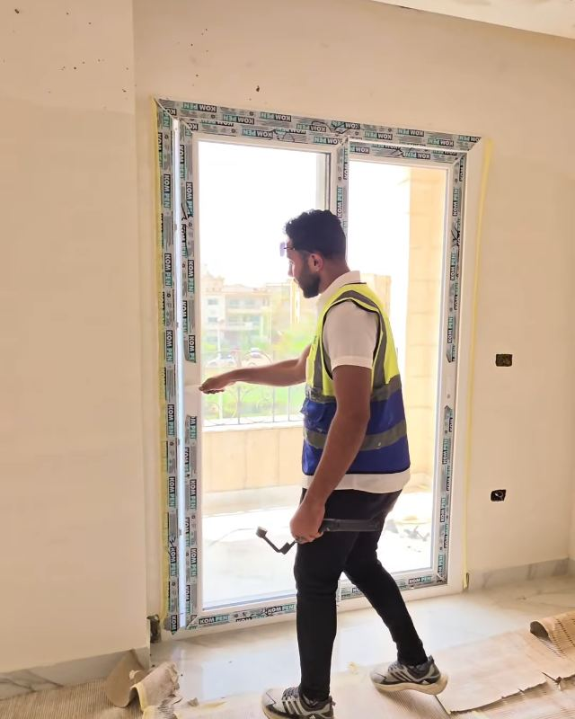
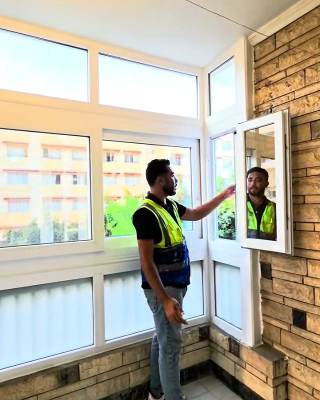

شبابيك وأبواب جرار
الحل العملي لأغلب البيوت: حركة ناعمة، توفير في المساحة، وعزل محترم للصوت والتراب.
- جرار 2 و4 ضلفة بمقاسات بانورامية
- عجل جرار نحاس للأوزان التقيلة
- سلك متحرك لتهوية من غير حشرات
Skyline - For UPVC & Shutter
توريد وتركيب أبواب وشبابيك uPVC وشيش حصيرة — من المعاينة لحد التسليم.
الإختيار الراقي لمن يُقَدِّر التفاصيل
من نحن
Skyline - For UPVC & Shutter شركة متخصصة في توريد وتركيب أبواب وشبابيك الـ uPVC والشيش الحصيرة، ومعرضها الرئيسي في مدينة نصر. بدأنا سنة 2019 بفكرة بسيطة: الشباك اللي بيتركب في بيتك لازم يعيش معاك العمر كله.
عشان كده بنهتم بالتفاصيل اللي ما بتتشافش بسهولة: التدعيم اللي جوه القطاع، نوع العجل والمفصلات، طريقة التقفيل، ودقة المقاس. كل عملية بنختار لها النظام المناسب — جرار، منطبق، باندا أو مفصلي — والزجاج المناسب للعزل والخصوصية.


خدماتنا
من الشباك العادي لتقفيل البلكونة والشيش الحصيرة والتصميمات الخاصة — كل نظام بنختاره على حسب المكان والاستخدام.
الحل العملي لأغلب البيوت: حركة ناعمة، توفير في المساحة، وعزل محترم للصوت والتراب.
لو عايز الشباك يفتح على آخره من غير قواطع ثابتة، بنصمم فتحات عريضة بتدخل أقصى إضاءة وتهوية.
بنحوّل البلكونة لمساحة إضافية معزولة عن دوشة الشارع والتراب، وبتفضل منورة طول اليوم.
حماية إضافية للشبابيك وتحكم كامل في ضوء الشمس والأتربة، مع طبقة عزل حراري وصوتي زيادة.
بنختار نوع السلك المناسب لكل فتحة عشان تستمتع بالهوا من غير ما تقلق من الحشرات.
الدورانات والأقواس والأشكال غير التقليدية — زي شباك دائري كامل بداخله شباك مفصلي.
ليه Skyline؟
إحنا مش بنبيع شبابيك وبس — إحنا بنقدم راحة بال. ودي الحاجات اللي بنلتزم بيها في كل مشروع.
بندعّم القطاع من جوه بحديد مجلفن، ونستخدم عجل نحاس ومفصلات صلب عشان الشغل يعيش سنين من غير أعطال.
قطاعات كاترا وكومبين ومايسترو وكرافت لاين، وزجاج سان جوبان — مش أي حاجة والسلام.
بنرفع المقاسات في الموقع قبل أي تنفيذ، عشان كل ضلفة تقفل وتفتح بالظبط.
تقفيل بالسيليكون والفوم وفينش متشطب، عشان مفيش تسريب ولا شكل مش مريح للعين.
مش بنركّب شبابيك تقليدية وخلاص؛ بنختار النظام والزجاج واللون المناسبين لكل أوضة.
أكتر من عميل رجع لنا للمرة التانية والتالتة — وده أكبر شهادة على جودة الشغل.
الرحلة
نفهم احتياجات بيتك أو مشروعك، ونقترح النظام والقطاع المناسبين.
رفع مقاسات في الموقع ومراجعة احتياج العزل الحراري والصوتي والخصوصية.
تجهيز الشغل على المقاس بالقطاع والزجاج والإكسسوارات المتفق عليها.
تركيب دقيق وتقفيل محكم، ثم تسليم الشغل وهو بيفتح ويقفل بنعومة.
من أحدث الشغل
كل فيديو مكتوب تحته المكان اللي اتنفذ فيه.
الخامات
الجودة بتبدأ من الخامة وبتكمل في التفاصيل. دي المواصفات اللي بننفذ بيها شغلنا، سواء القطاع مصري أو تركي.
أسئلة شائعة
جمعنا أكتر الأسئلة اللي بتتكرر. لو سؤالك مش هنا، ابعتلنا على واتساب.
المعرض الرئيسي: شارع حسن مأمون، مدينة نصر، الحي الثامن، القاهرة، مصر.
للحجز والاستفسار وطلب المعاينات: 01111934900 – 01080477077، أو على واتساب +20 11 11934900.
في Skyline بنسعد بتقديم خدماتنا في جميع أنحاء القاهرة الكبرى والمدن الجديدة، ومستعدين للوصول إليك في كل محافظات الجمهورية.
في Skyline، بنوفر مجموعة منتقاة من أفضل قطاعات الـ UPVC (الأوروبية، التركية، والمصرية) لتلبية كافة الاحتياجات والأذواق المعمارية والميزانيات، ومن أبرزها:
في المشاريع المنشورة: زجاج سنجل، ودبل بفراغ 9 مم، وعاكس أبيض وبني، ومصنفر للحمامات والخصوصية، وزجاج سان جوبان (Saint-Gobain).
جرار (2 و4 ضلفة)، مفصلي، منطبق، باندا، وتصميمات خاصة زي الشباك الدائري. ومعاها سلك متحرك أو بليسيه أو ثابت، وشيش حصيرة يدوي.
بكل تأكيد! تقفيل البلكونات بالـ UPVC هو واحد من أهم تخصصاتنا والأكثر طلباً في Skyline.
إحنا بنعتبر تقفيل البلكونة مش مجرد تركيب شبابيك، ده استثمار ذكي لتحويل مساحة مهدرة أو معرضة للتراب والدوشة لـ "غرفة إضافية" نظيفة، هادية، ومريحة جداً للاستخدام طول السنة.
ليه تقفل بلكونتك مع Skyline؟
حسب المنشورات: تدعيم داخلي بحديد مجلفن (1.25 مم) بكامل القطاع، عجل جرار نحاس، مفصلات صلب، وتقفيل بالسيليكون والفوم.
بكل تأكيد! في Skyline نحن نقدم حلولاً متكاملة لتشطيب وتجهيز بيتك بأعلى معايير الجودة، ولا نقتصر على الشبابيك فقط. تشمل خدماتنا:
الضمان 10 سنوات على القطاع و5 سنوات على الإكسسوارات. السعر بيتحدد حسب المقاسات والقطاع والزجاج — اطلب عرض سعر.
لو الفيديو ماظهرش هنا (فيسبوك بيمنع تضمين بعض الفيديوهات)، افتحه من الزرار ده.